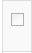
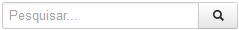
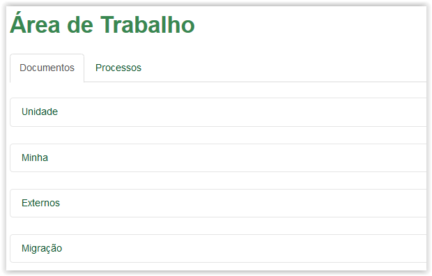
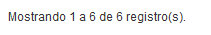

Área de Trabalho
A Área de Trabalho está dividida em "abas" Documentos e Processos, além das "Áreas" Unidade, Minha, Externos e Migração:
Área de Trabalho
Cada Área (Unidade, Minha, Externos e Migração) possui os documentos ou processos listados em uma "grid":
Área de Trabalho - Aba Documentos, Área Minha
Área de Trabalho - Aba Documentos, Área Minha
Na primeira coluna existem campos  para seleção. Eles são utilizados para selecionar o documento ou processo para realizar alguma ação múltipla, ou seja, vários documentos ou processos podem ser selecionados para efetuarem simultaneamente a mesma ação. Se desejar selecionar todos os registros de uma só vez, clique no campo localizado na parte superior da grid.
A segunda coluna exibe alguns ícones que demonstram algumas características do documento ou processo. Conheça eles:
Ícones |
Característica |
Referenciado em outro artefato |
|
Possui vínculos |
|
Possui demandas abertas |
|
Prioridade alta |
|
Prioridade média |
|
Prioridade baixa |
Lista de Ícones da Área de Trabalho que representam características do artefato
As colunas Digital, Cadastro, Assunto, Número e Origem exibem informações do documento ou processo cadastrado.
Colunas da grid de Documentos
Colunas da grid de Processos
A coluna Movimentação exibe a última ação executada para o documento ou processo, incluíndo o autor da ação e a data e hora.
Coluna da grid de Documentos
Coluna da grid de Processos
A coluna Ações apresenta os ícones com as ações disponíveis para cada documento ou processo.
Utilize o campo  para pesquisar por alguma informação ou característica do documento ou processo, dentro da Área selecionada.
O ícone , situado no canto superior direito, é exibido quando existem novas notificações. E nesse caso, o ícone apresenta também a quantidade de notificações. Ao posicionar o mouse em cima desse ícone um resumo é apresentado:
Os elementos , e fazem parte da paginação e visualização dos registros da grid (Veja abaixo: Visualizar e "navegar" entre os registros).
 Formas de "navegar" entre as abas e as áreas dentro da Área de Trabalho!
Formas de "navegar" entre as abas e as áreas dentro da Área de Trabalho!

Área de Trabalho - Aba Documentos - Aba ativa
Selecionando a aba para se tornar ativa
Área de Trabalho - Aba Processos - Aba ativa
Área de Trabalho - Aba Documentos - Área Unidade
Selecionando a Área para se tornar ativa
Área de Trabalho - Aba Documentos - Área Minha
 Formas de visualizar os documentos e processos de cada Área!
Formas de visualizar os documentos e processos de cada Área!



Created with the Personal Edition of HelpNDoc: Free HTML Help documentation generator